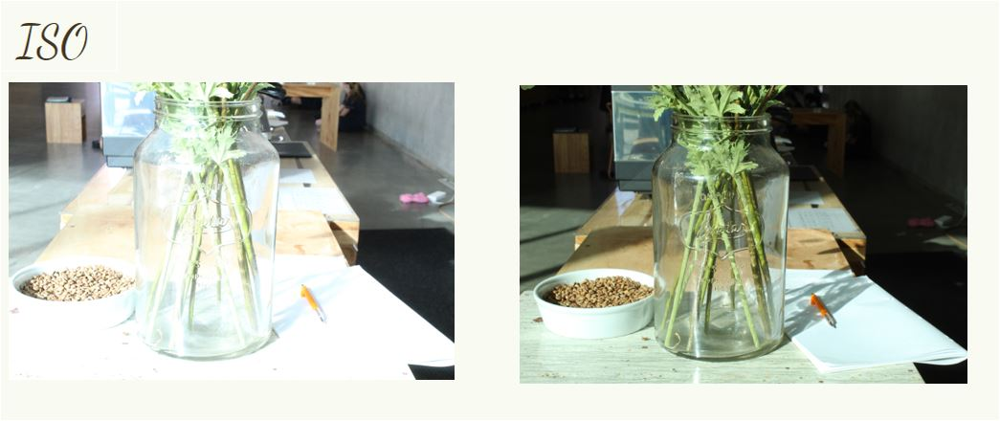
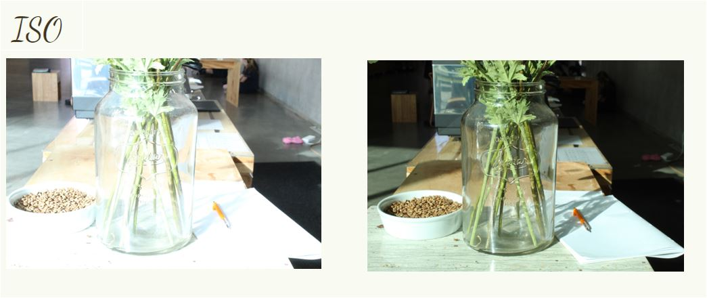

This is my Julian Opie Selfie. Click on the image to see the process I took when making it.
Beth Hoeckel Collage
This is my Beth Hoeckel Collage. The background image that I chose was just space with the earth in the middle. I then photoshopped the road into it. I did this by using ‘open image’ and then I inserted it on another tab. I then used the lasso select tool to draw around the road, and then I used the ‘move tool’ to move the road to my background image. Doing this took a lot of experimenting because I couldn’t figure out how to do it at very beginning. I then added the van. I once again used the ‘open image’ tool and then the ’lasso select ’tool and the ‘move tool’ to add this image to my background. Once I had done this, I encountered a problem because the van was to small. I went to ‘edit’, ‘transform’ and then ‘scale’. I then enlarged the van so that it fits the road. Finally, I added the man to the picture. I used the paint brush tool to write the words, ‘earth’ on his sign. I then once again used the ‘lasso select’ and ‘move’ tool. I needed to shrink the image because in proportion to the car, the man was to big. I used ‘scale’, once again, to resize the image.


 
